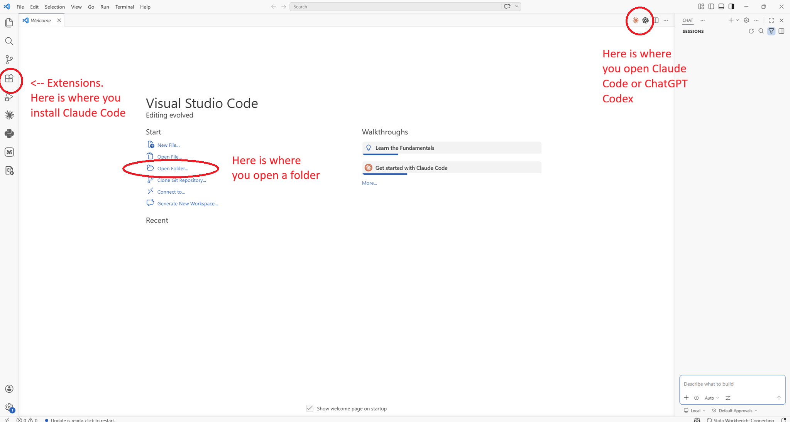
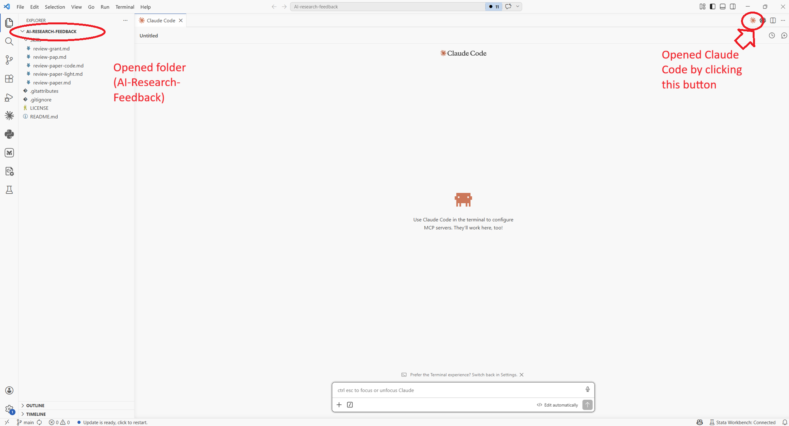

Setup
Installation in 5 Steps
Installing Claude Code in VSCode and getting started is actually quite straightforward.
- Open VS Code and open the Extensions panel by pressing
Ctrl+Shift+X. - Search "Claude Code" and install the official Anthropic extension.
- Click the Claude icon (
 ) in the left sidebar or on the top right of a window pane.
) in the left sidebar or on the top right of a window pane. - Sign in with your Claude account or API key.
- Open your full project folder in VS Code (File → Open Folder), not just a single file. Claude needs the whole directory tree to be useful. This can be any folder on your computer — a git repository, a Dropbox folder, or a plain folder on your desktop all work equally well.
Claude Code: Open Walkthrough from the Command Palette (Ctrl+Shift+P) for a quick interactive tour of the basics. Mac users: replace Ctrl with Cmd throughout — e.g. Cmd+Shift+X to open Extensions, Cmd+Shift+P for the Command Palette.


Recommended Extensions
A Starter Pack for Economists
Install these alongside Claude Code to cover the full research stack. Search for each by the extension ID in the Extensions panel (Ctrl+Shift+X).
AI Assistants
Stata
r(), e()) during a session.Python
.py files. Required for anything Python-related.LaTeX
Data Files
RBQL) for filtering rows without loading into R or Python. Very useful for quickly sanity-checking raw data files.Customisation
CLAUDE.md and Skills
CLAUDE.md — Persistent Project Context
A CLAUDE.md file at your project root is read automatically at the start of every Claude Code session. It's the place to tell Claude things that are always true about your project — conventions, variable naming, dataset structure, what not to touch — so you don't have to repeat them in every prompt.
The easiest way to create one is to type /init in the Claude Code panel. Claude will read your project folder and generate a draft CLAUDE.md automatically — inferring your file structure, the languages you're using, and any conventions it can detect. Review and edit the result before using it. Alternatively, create the file manually. A useful starting point for an empirical project:
# Project: [Paper title]
## Data
- Unit of analysis: firm-year panel, 2010–2022
- Raw data lives in data/raw/ — never edit these files
- Main dataset after cleaning: data/clean/panel.dta (N ≈ 47,000)
## Code conventions
- R scripts are numbered (01_clean.R, 02_analysis.R, ...)
- All regressions cluster SEs at the firm level
- Use fixest for all panel regressions
## LaTeX
- Main file: paper/main.tex
- Tables generated by 03_tables.R go to paper/tables/
- Use \widehat{} not \hat{} for estimatorsCLAUDE.md files work at two levels, and both are loaded simultaneously:
~ is shorthand for your home folder — on Mac/Linux this is /Users/yourname/.claude/, on Windows it's typically C:\Users\yourname\.claude\. Note that folders starting with . are hidden by default; use Cmd+Shift+. on Mac to show them in Finder.When you open a project, Claude reads both files. The folder-level file takes precedence if there's any conflict.
Skills — Reusable Workflows as Slash Commands
Skills are markdown instruction files that become /slash-commands you can invoke in the Claude panel. When you type /skill-name, Claude loads the instructions and executes them — useful for repetitive tasks you run across projects, like a standard robustness check or reformatting a regression table.
Skills live in one of two places:
Each skill is a folder containing a SKILL.md file. The folder name becomes the slash command. To create a /robustness command:
mkdir -p ~/.claude/skills/robustness
# then create ~/.claude/skills/robustness/SKILL.mdA minimal SKILL.md for an economist:
---
name: robustness
description: Run standard robustness checks on the main regression.
---
For the main specification in this project:
1. Re-run with alternative clustering (industry-year instead of firm)
2. Re-run dropping the top and bottom 1% of the outcome variable
3. Re-run on the pre-2020 subsample only
4. Produce a summary table comparing coefficients across all specsDownloading Skills Others Have Written
There is a growing community library of shared skills. The best starting point is the awesome-claude-code repository on GitHub (github.com/hesreallyhim/awesome-claude-code), which curates skills, slash commands, and workflow templates. Copy any SKILL.md folder into ~/.claude/skills/ and it becomes available immediately as a slash command.
disable-model-invocation: true to the frontmatter.
Version Control
Git Integration
Claude Code is git-aware. When you open a project that is a git repository, Claude can see your commit history, staged changes, and diffs — without you having to paste anything. This makes it useful for version control tasks alongside coding ones.
Write a commit message for my staged changes.Summarise what changed between the last two commits
in 02_analysis.R.I have a merge conflict in 03_tables.R. Read both
versions and resolve it, keeping the more recent
variable names.Performance
Managing the Context Window
Claude can only hold a limited amount of text in its working memory at once — roughly equivalent to a few hundred pages. For large empirical projects with many scripts and data files, this fills up quickly, and performance degrades as it approaches the limit. A few habits help:
Rather than letting Claude read everything, point it at the specific file you're working on.
@02_analysis.R fix the clustering in the main spec.Each Claude Code tab is a fresh context. Use Ctrl+N (or Cmd+N on Mac) to open a new conversation rather than continuing a long one for an unrelated task.
Type /context in the panel to see a breakdown of how your context window is being used and how much space remains.
CLAUDE.md at the start of each session, you don't need to re-explain your project structure in every conversation — keeping prompts short and context usage low.
Key Concept
Permission Modes — Start Cautious
Before sending your first real prompt, set the permission mode at the bottom of the chat panel. There are three modes:
Claude asks permission before each file edit or command. Recommended to start.
Claude describes its full plan first; you approve before anything changes. Good for larger tasks.
Claude edits freely without pausing. Only use on throwaway branches.